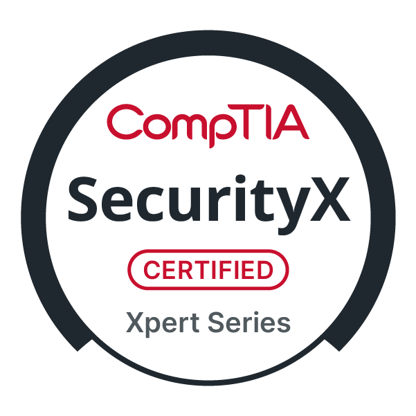

Certifications That Qualify Us to Help You
TenGuard Security holds the full suite of CMMC certifications from the Cyber Accreditation Body (Cyber AB), along with elite cybersecurity credentials that validate our deep technical expertise. When you work with us, you're working with someone who has been vetted to conduct official CMMC assessments.
Lead CCA
Lead Certified CMMC Assessor
CCA
Certified CMMC Assessor
CCP
Certified CMMC Professional

